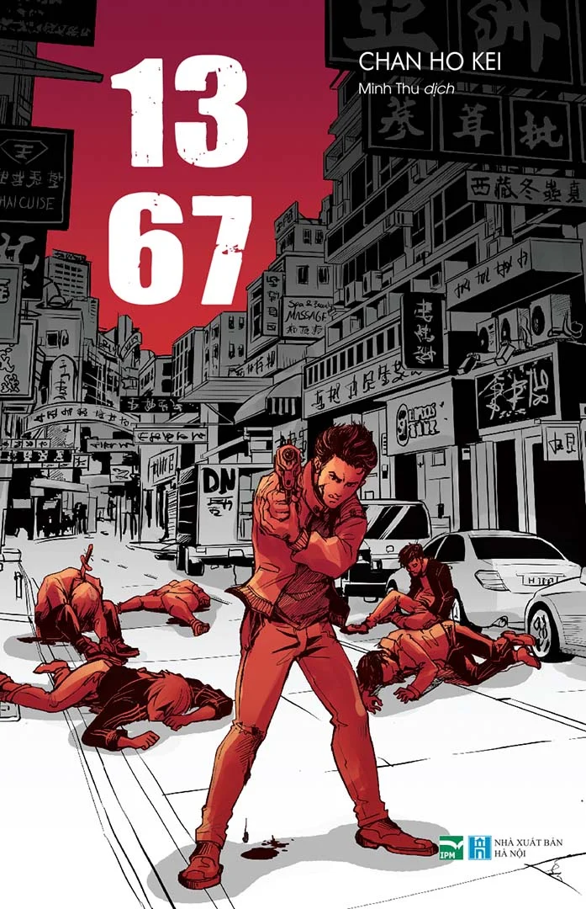

REVIEW SÁCH
1367
Nhận xét của mình
Đây chính xác là thể loại trinh thám, hình sự. Bạn nào yêu thích hình sự PHẢI đọc cuốn này nha, rất hay luôn. “1367” ở đây là một giai đoạn từ năm 2013 về năm 1967, mạch truyện đi trở lại quá khứ, mỗi chương là mỗi vụ án khác nhau đánh dấu trong sự nghiệp của ông thanh tra Quan Chấn Đạc và cậu học trò. Chương nào cũng kể về công việc và hành trình điều tra thám thính của cảnh sát Hồng Kông và chương nào cũng có plot twist rất điên rồ. Nhưng đó cũng chưa phải điểm đặc biệt nhất, khi đã đọc hết và gấp sách lại, mình đã nhận ra sự liên kết và móc nối giữa hai năm 2013 và 1967. Khi mà các chương đều là các mốc thời gian khác nhau và không liên quan đến nhau thì chương đầu và chương cuối lại có điểm giao nhau , đó là điều không tưởng và khiến mình nổi da gà da vịt.
🛍️ Tìm mua cuốn sách
Bạn có thể tham khảo giá tại các nhà sách online: